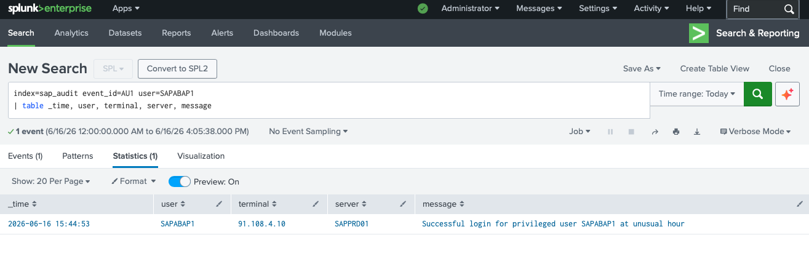
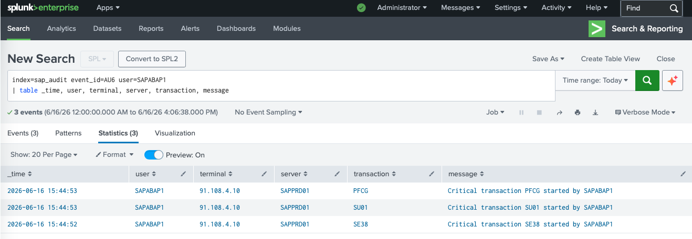

Das Angriffsszenario
Dieses Szenario ist eines der gefährlichsten im SAP-Umfeld: Ein kompromittiertes
privilegiertes Konto. Der Angreifer hat die Credentials von SAPABAP1
erbeutet — einem der mächtigsten SAP-Standardbenutzer mit nahezu unbegrenzten Rechten im System —
und nutzt diese für eine gezielte Nacht-Aktion.
Warum SAPABAP1 kritisch ist: SAPABAP1 ist der Standard-ABAP-Entwicklungsbenutzer in SAP-Systemen. Mit diesem Konto kann ein Angreifer beliebigen ABAP-Code schreiben und ausführen, alle Benutzerkonten manipulieren und sich dauerhaft im System verankern — ohne Spuren in den Anwendungslogs zu hinterlassen.
Kritische SAP-Transaktionen — Was wurde ausgeführt?
Nach dem Login führt der Angreifer in weniger als einer Minute drei hochkritische Transaktionen aus — ein klares Zeichen für zielgerichtetes, vorbereitetes Vorgehen:
Direkter Zugriff auf den SAP-Quellcode. Ermöglicht das Einschleusen von Backdoors, Datenexfiltrations-Routinen oder das Deaktivieren von Sicherheitsprüfungen auf Code-Ebene.
Erstellen, Ändern und Löschen von SAP-Benutzern. Der Angreifer kann sich einen weiteren privilegierten Backdoor-Benutzer anlegen, der nach dem Incident unauffällig bleibt.
Berechtigungen und Rollen anlegen und zuweisen. Damit kann ein Angreifer einem unauffälligen Benutzer vollständige Admin-Rechte geben — dauerhafter Persistence-Mechanismus.
Kill Chain: SE38 (Code einschleusen) → SU01 (Backdoor-User erstellen) → PFCG (Backdoor-User mit Admin-Rechten ausstatten). In drei Transaktionen hat der Angreifer dauerhaften Zugang zum System gesichert.
Attack-Timeline
SAPABAP1 meldet sich von 91.108.4.10 (externe IP) am Produktivsystem SAPPRD01 an. Uhrzeit und Quell-IP sind sofortige Warnsignale — kein legitimer Admin arbeitet nachts von außen.
Unmittelbar nach dem Login wird der ABAP Editor geöffnet. Ziel: Schadcode oder Backdoor in bestehende Programme einschleusen.
Benutzerverwaltung geöffnet. Wahrscheinliches Ziel: Einen neuen Backdoor-Benutzer mit unauffälligem Namen anlegen.
Rollenverwaltung geöffnet. Ziel: Den neuen Backdoor-Benutzer mit vollen Admin-Berechtigungen ausstatten — dauerhafter Persistence-Mechanismus.
Splunk-Alert greift: Privilegierter Benutzer + externe IP + Nacht-Login + kritische Transaktionen = sofortige Eskalation an das Incident-Response-Team.
Erkennung — Splunk SPL-Queries
Query 1 — Verdächtigen Admin-Login identifizieren
Der erste Schritt ist die Suche nach erfolgreichen Logins (AU1) privilegierter Benutzer. Ein einziges Ergebnis reicht, wenn die Kombination aus Uhrzeit und Quell-IP nicht plausibel ist.

Abb. 1 — SAPABAP1 meldet sich von der externen IP 91.108.4.10 an SAPPRD01 an — "Successful login for privileged user SAPABAP1 at unusual hour"
Die Meldung ist bereits im Message-Feld sichtbar: "Successful login for privileged user SAPABAP1 at unusual hour". Quell-IP 91.108.4.10 ist extern — kein legitimer SAP-Basis-Admin arbeitet um 02:30 Uhr von einer fremden IP am Produktivsystem.
Query 2 — Ausgeführte Transaktionen analysieren
Der zweite Schritt zeigt, was der Angreifer nach dem Login getan hat. AU6-Events protokollieren jeden Transaktionsstart — so wird die gesamte Aktivitätskette sichtbar.

Abb. 2 — SAPABAP1 führt innerhalb einer Minute SE38 (ABAP Editor), SU01 (Benutzerverwaltung) und PFCG (Rollenverwaltung) aus — alle von 91.108.4.10
Drei kritische Transaktionen, alle von derselben externen IP, innerhalb einer Sekunde — das ist keine manuelle Arbeit. Dies deutet auf ein automatisiertes Angriffs-Skript hin, das nach dem erfolgreichen Login sofort ausgeführt wird.
Incident-Zusammenfassung
| ZEIT | EVENT-ID | BENUTZER | QUELL-IP | TRANSAKTION | SEVERITY |
|---|---|---|---|---|---|
| 02:30:53 | AU1 | SAPABAP1 | 91.108.4.10 | — | HIGH |
| 02:30:52 | AU6 | SAPABAP1 | 91.108.4.10 | SE38 | HIGH |
| 02:30:53 | AU6 | SAPABAP1 | 91.108.4.10 | SU01 | HIGH |
| 02:30:53 | AU6 | SAPABAP1 | 91.108.4.10 | PFCG | HIGH |
Wichtige Erkenntnisse
SAPABAP1 darf nicht aus dem Internet erreichbar sein. Das Passwort muss sofort zurückgesetzt, alle aktiven Sessions beendet und alle Aktivitäten des Kontos seit dem letzten bekannten sicheren Zeitpunkt geprüft werden.
SU01 + PFCG wurden ausgeführt — es muss sofort geprüft werden, ob neue Benutzer oder Rollen angelegt wurden. Ein Angreifer hinterlässt sich immer einen zweiten Eingang.
SE38 wurde geöffnet — alle kürzlich geänderten ABAP-Programme müssen auf eingeschleusten Code geprüft werden. Besonders kritisch: Exits, BAdIs und User-Exits in Finanz- und HR-Prozessen.
Ohne SIEM-Integration wäre dieser Angriff erst beim nächsten manuellen SM20-Audit aufgefallen — Tage oder Wochen später. Die SIEM-Anbindung ist der entscheidende Unterschied zwischen Detection und einem vollständigen Compromise.
Empfehlungen
SAPABAP1, DDIC und SAP* sind bekannte Angriffsziele. Nicht benötigte Standard-User sperren, aktive User umbenennen und mit starken Passwörtern sichern.
Privilegierte Benutzer dürfen sich nur aus definierten IP-Ranges oder Ländern anmelden. SAP Logon Groups und Netzwerk-ACLs konsequent einsetzen.
SIEM-Regel: SE38, SU01, SU10, PFCG von einer nicht-internen IP = sofortiger P1-Alert. Keine Ausnahmen für "Notfall-Zugang".
Privilegierte Aktionen außerhalb der Kernarbeitszeiten (z.B. 22:00–06:00 Uhr) automatisch eskalieren. Legitime Notfall-Arbeiten müssen über einen genehmigten Change-Prozess laufen.
Nächster Teil dieser Serie: Privilege Escalation Detection — ein normaler SAP-Benutzer versucht wiederholt, auf administrative Transaktionen zuzugreifen und löst dabei einen Sturm von AUB-Events aus.